Del cráter humeante del volcán a los bosques nubosos, lagunas y fincas de fresa: un recorrido por lo mejor del cantón de Poás.
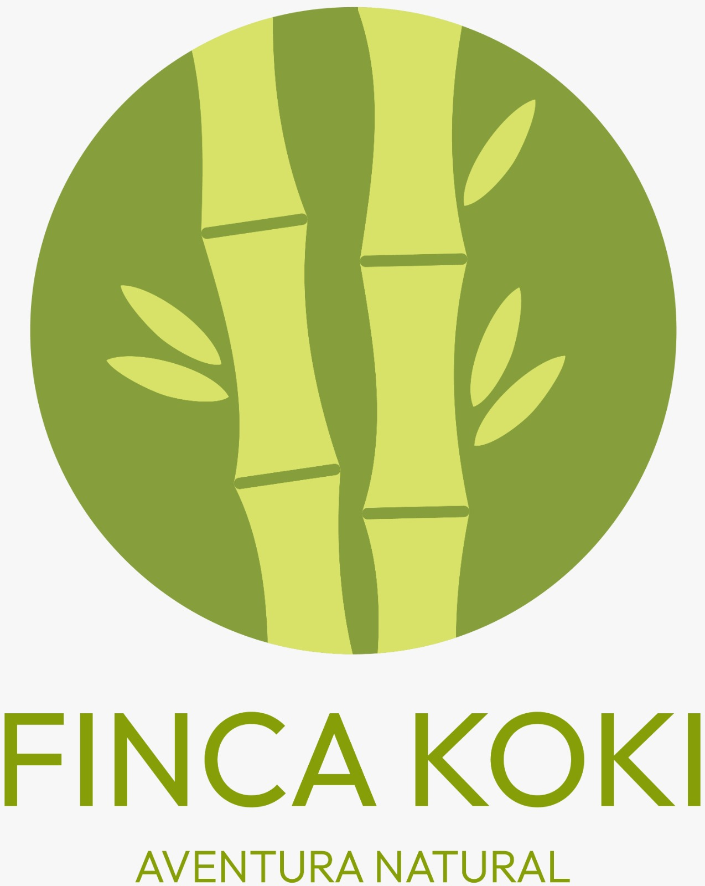
AVENTURA NATURAL · Ecoturismo para toda la familia
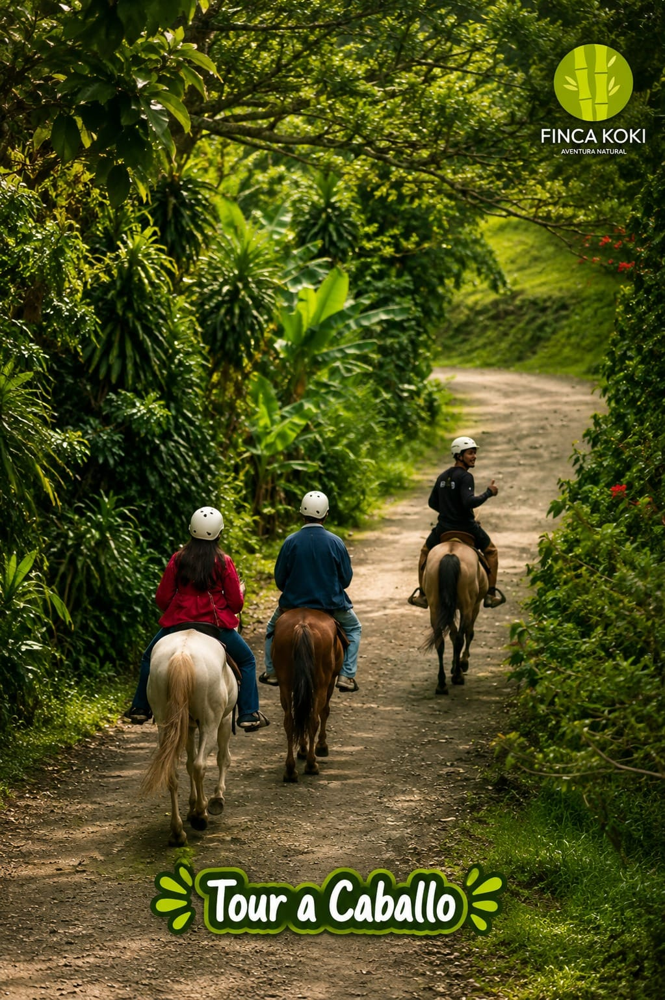
🌿 Un día de aventura entre lagunas, cataratas, senderos y bosqueFinca Koki es un destino de ecoturismo y aventura al aire libre pensado para disfrutar en familia, con amigos o en grupo. Con un solo Pase del Día tenés acceso a decenas de actividades acuáticas, terrestres y de naturaleza rodeado de paisajes verdes, ríos y cataratas. Un espacio para reconectar con la naturaleza de forma responsable y divertida.
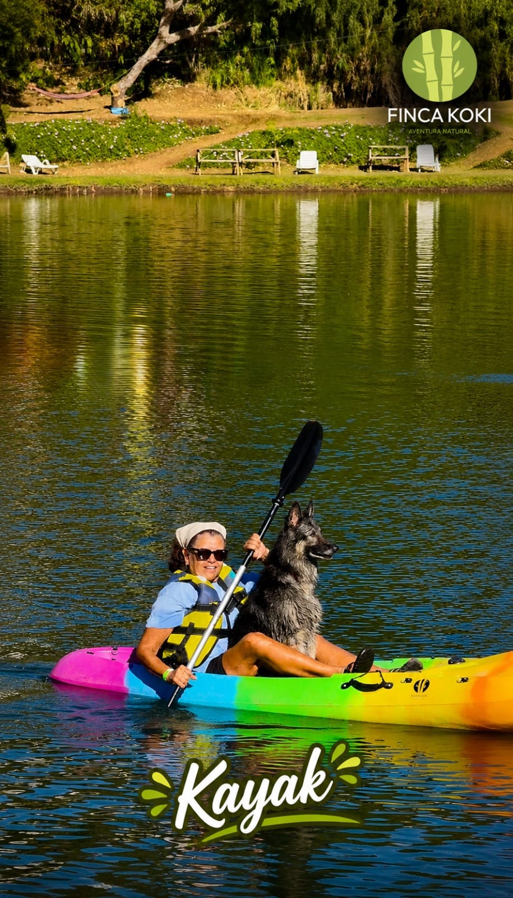
🛶 Kayak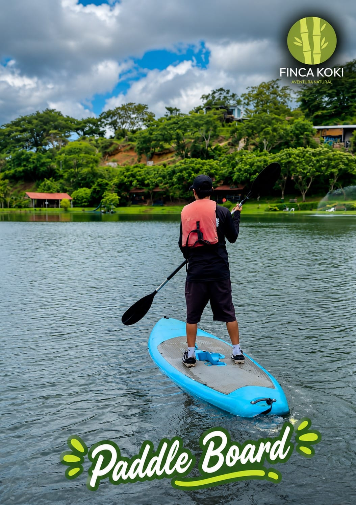
🏄 Paddle Board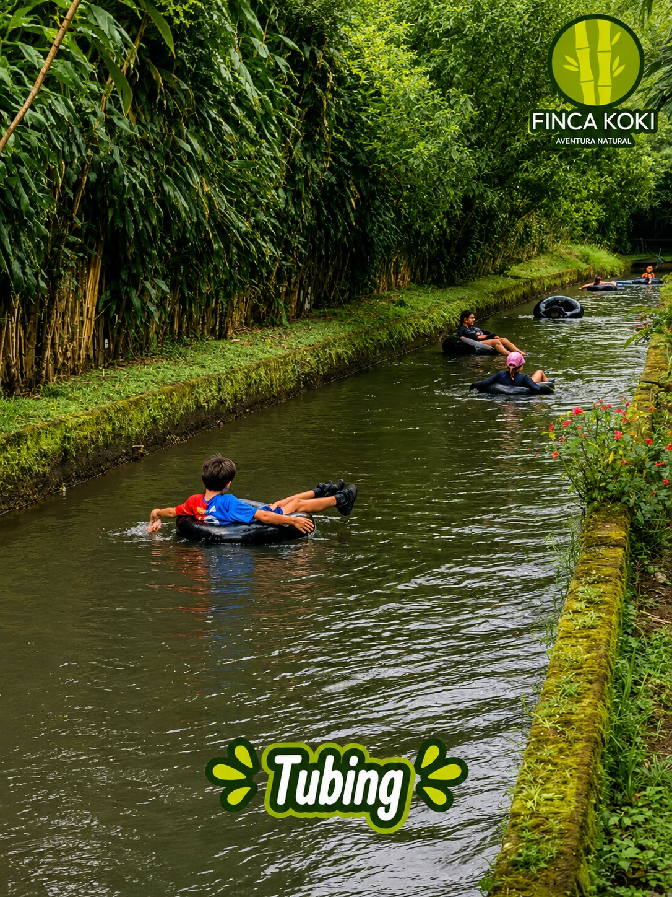
🎢 Tubing 1 y 2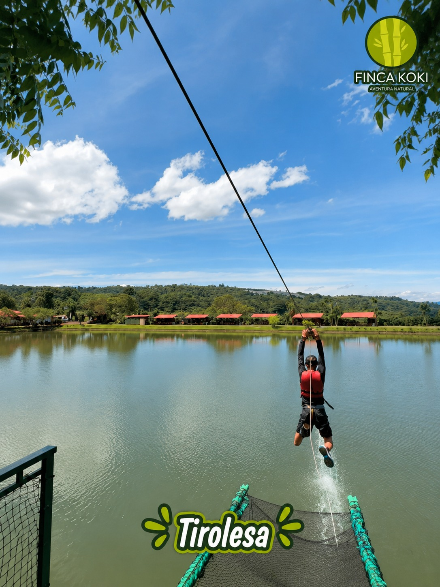
🌉 Tirolesa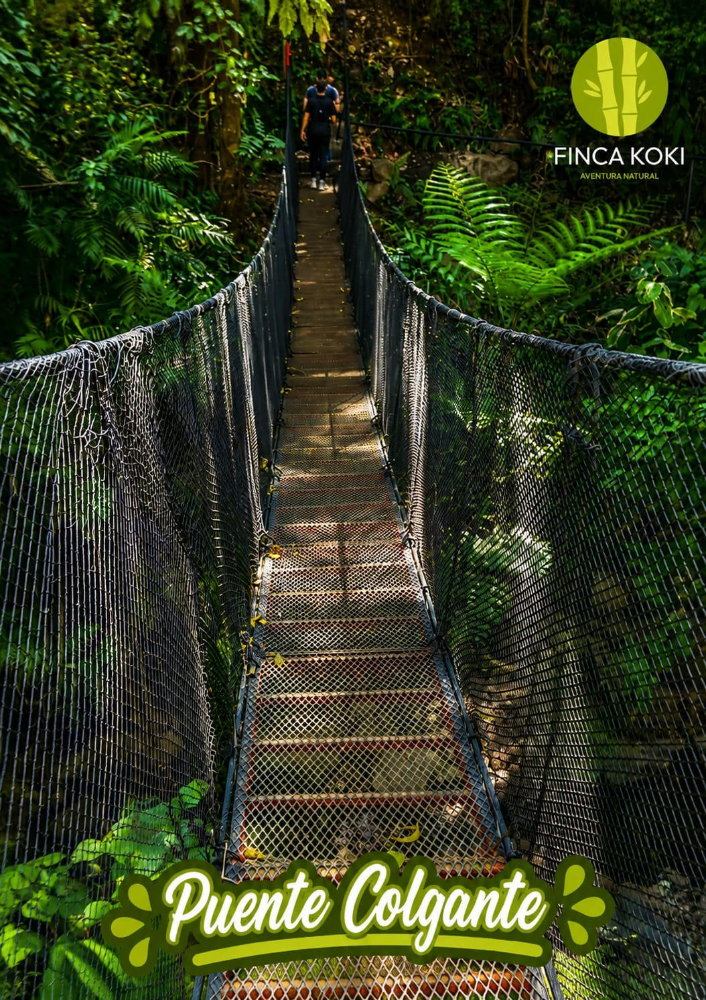
🌁 Puente Colgante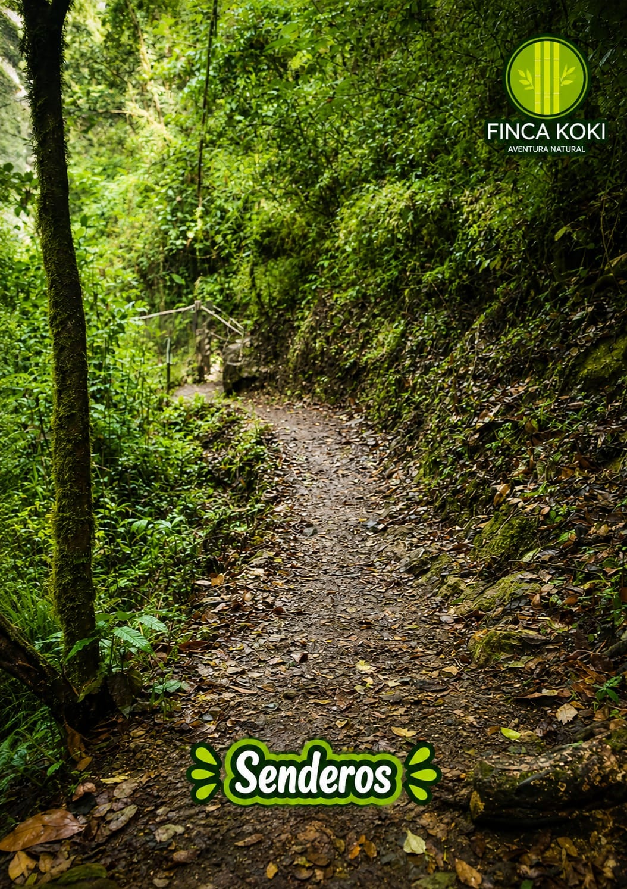
🥾 9 km de Senderos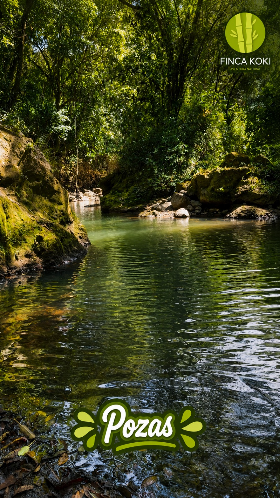
💦 Pozas y Cataratas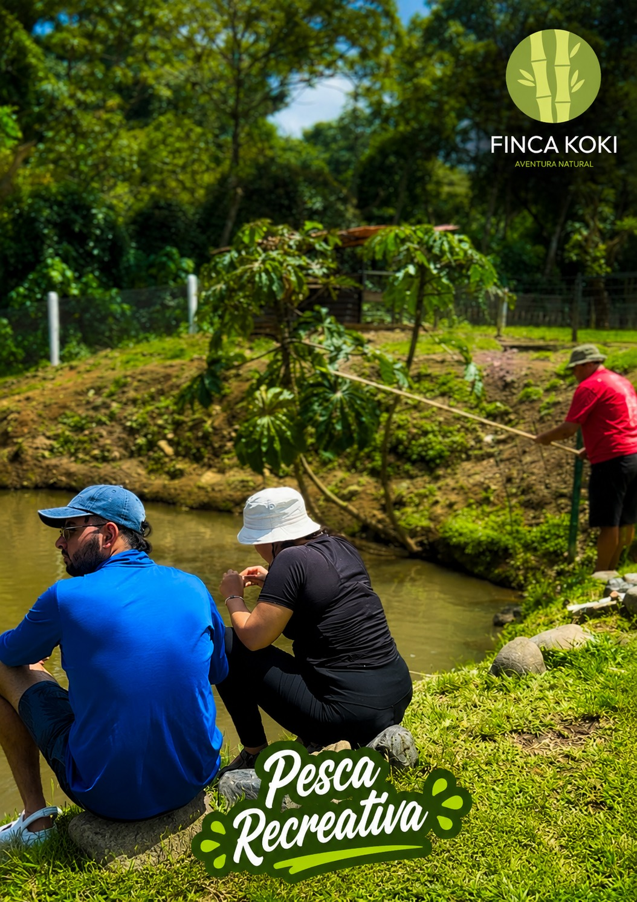
🎣 Pesca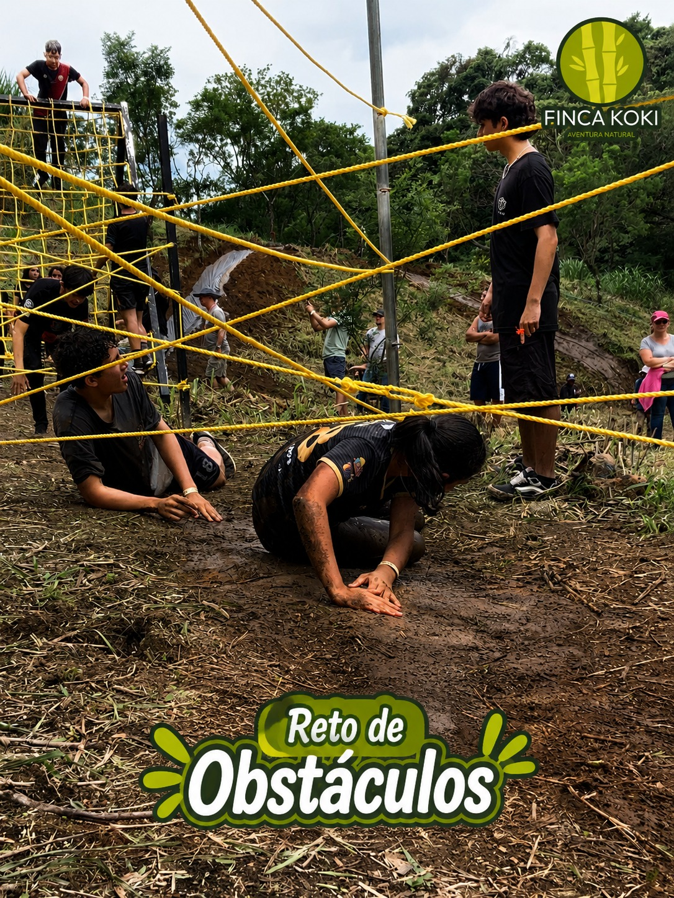
🏃 Carrera de ObstáculosAdemás incluye: 🚴 Bicicleta acuática · 🚜 Tour en Chapulín · ⚡ Tour Hidroeléctrica · ₿ Tour Bitcoin · 🐐 Nuestra Granja. Las actividades autoguiadas y la carrera de obstáculos deben realizarse siguiendo siempre las indicaciones del guía. Menores de 18 años siempre acompañados de un adulto.
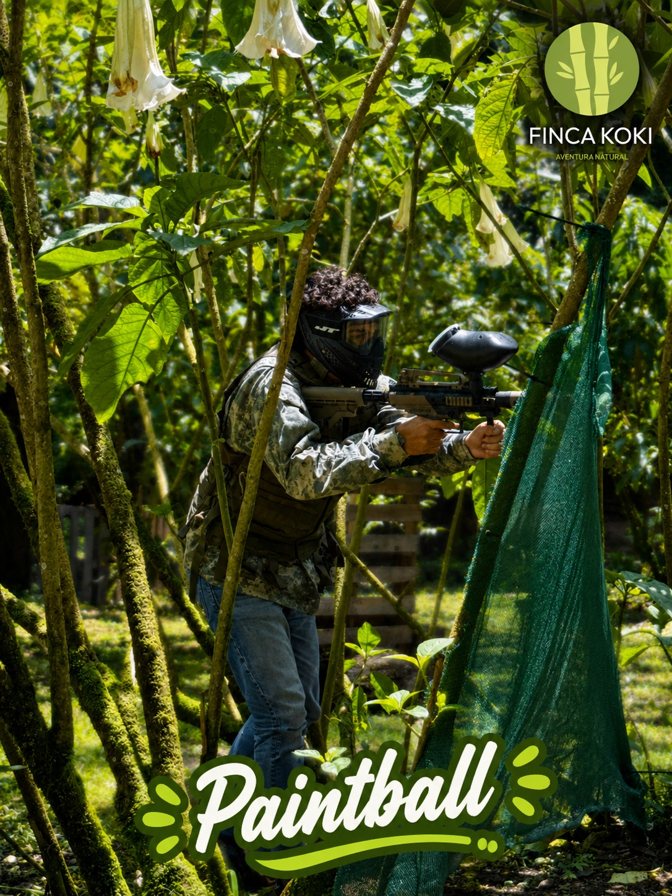
🔫 PaintballTambién disponibles bajo reserva: 🏕️ Camping · 🏡 Ranchos.
Siempre abiertos: de lunes a lunes y todos los feriados, de 7:00 a.m. a 5:00 p.m.
Preparamos eventos para grupos educativos, empresariales, adultos mayores y sociales: bodas, cumpleaños, baby showers y más.
Los destinos que definen a Poás como uno de los rincones naturales más impresionantes de Costa Rica. Empieza por aquí.
Uno de los volcanes más visitados del país. Su cráter activo, de más de un kilómetro de diámetro, es un espectáculo único accesible por un cómodo sendero desde el centro de visitantes.
Reserva previa en SINACLaguna de origen volcánico rodeada de bosque nuboso dentro del parque nacional. Se llega por el Sendero Botos, una caminata tranquila entre musgos, helechos y aves.
Sendero dentro del parqueUn espacio ideal para toda la familia: laguna, áreas verdes, senderos, zonas de picnic y aire fresco de montaña. Perfecto para una parada antes o después del volcán.
FamiliarLas faldas altas del volcán están cubiertas de bosque nuboso, hogar de quetzales, colibríes y una vegetación exuberante. Ideal para la observación de aves y la fotografía de naturaleza.
Observación de avesLa subida hacia el volcán es un clásico entre ciclistas de todo el país por su exigente ascenso y sus vistas del Valle Central. Un reto deportivo con recompensa panorámica.
Deporte y aventuraA lo largo de la carretera hacia el volcán encontrarás fincas y puestos donde comprar fresas frescas, batidos y mermeladas artesanales directamente del productor local.
Producto localActividades para vivir el cantón más allá de la vista: café, naturaleza y tradición.
Recorre los cafetales de altura del cantón y descubre el proceso completo del grano, desde la siembra hasta la taza. Varias fincas de la zona ofrecen recorridos guiados y degustaciones.
Senderos naturales entre la vegetación de altura, con miradores hacia el Valle Central y avistamiento de flora y fauna endémica. Ideal para caminatas cortas o de medio día.
Los miradores y terrazas de la zona ofrecen algunas de las mejores vistas del atardecer sobre las luces del Valle Central. Una experiencia obligatoria al caer la tarde.
Visita las queseras artesanales de Poasito, donde se elabora el famoso queso palmito. Muchos puestos permiten ver el proceso y comprar producto recién hecho.
Paradas rápidas para capturar los paisajes del cantón.
Vista panorámica del Valle Central rodeada de bosque y aire fresco. Perfecto para fotos y una pausa en el camino.
El mirador principal del cráter, uno de los paisajes volcánicos más impresionantes y accesibles del país.
Varios puntos a lo largo de la carretera al volcán con vistas abiertas ideales para el atardecer.
El clima en Poás es variable y frío. Planificá tu visita para aprovecharla al máximo.
Las entradas al Parque Nacional Volcán Poás se compran con antelación únicamente en el sitio oficial del SINAC. No se venden en la entrada física.
Reservá para las primeras horas de la mañana. El cráter suele cubrirse de nubes conforme avanza el día, así que entre 8:00 y 8:30 a.m. tenés mejores probabilidades de verlo despejado.
La temperatura baja mucho en la cima y puede llover sin aviso. Ropa en capas, chaqueta e impermeable son esenciales todo el año.
Buscá "Cámara Cráter Poás" en Google para ver en vivo si el volcán está despejado antes de subir y planificar mejor tu día.
Agrégalo a la Ruta Turística y llegá a más visitantes que buscan experiencias auténticas en nuestro cantón.
📬 Contáctenos para registrarlo